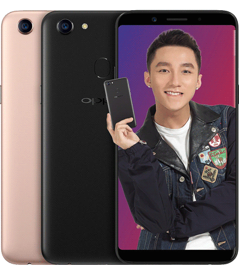

sản phẩm 3

Màn hình
Công nghệ màn hình Super AMOLED
Độ phân giải HD+ (720 × 1480 Pixels)
Màn hình rộng 5.6"
Mặt kính cảm ứng 2.5D Diamond Cut Glass
Camera sau
Độ phân giải 13 MP
Quay phim Quay phim FullHD 1080p@30fps
Đèn Flash Có
Chụp ảnh nâng cao Tự động lấy nét, Chạm lấy nét, Nhận diện khuôn mặt, HDR, Panorama
Camera trước
Độ phân giải 8 MP
Videocall Hỗ trợ VideoCall thông qua ứng dụng
Thông tin khác Đèn Flash trợ sáng, Tự động lấy nét, Nhận diện khuôn mặt, Chế độ làm đẹp
Hệ điều hành - CPU
Hệ điều hành Android 8.0 (Oreo)
Chipset (hãng SX CPU) Exynos 7870 8 nhân 64-bit
Tốc độ CPU 1.6 GHz
Chip đồ họa (GPU) Mali-T830
Bộ nhớ & Lưu trữ
RAM 3 GB
Bộ nhớ trong 32 GB
Bộ nhớ còn lại (khả dụng) Khoảng 22 GB
Thẻ nhớ ngoài MicroSD, hỗ trợ tối đa 256 GB
Kết nối
Mạng di động Hỗ trợ 4G
SIM 2 Nano SIM
Wifi Wi-Fi 802.11 b/g/n, Wi-Fi Direct, Wi-Fi hotspot
GPS BDS, A-GPS, GLONASS
Bluetooth v4.2, A2DP, LE
Cổng kết nối/sạc Micro USB
Jack tai nghe 3.5 mm
Kết nối khác USB 2.0
Thiết kế & Trọng lượng
Thiết kế Nguyên khối
Chất liệu Nhựa
Kích thước Dài 149.3 mm - Ngang 70.2 mm - Dày 8.2 mm
Trọng lượng 154 g
Thông tin pin & Sạc
Dung lượng pin 3000 mAh
Loại pin Pin chuẩn Li-Ion
Công nghệ pin Tiết kiệm pin
Tiện ích
Bảo mật nâng cao Mở khóa bằng vân tay, Mở khóa bằng khuôn mặt
Tính năng đặc biệt Đèn pin
Chặn cuộc gọi
Chặn tin nhắn
Ghi âm Có
Radio Có
Xem phim 3GP, MP4, AVI, WMV
Nghe nhạc Midi, AMR, MP3, WAV, WMA, AAC, eAAC+, OGG, FLAC
Thông tin khác
Thời điểm ra mắt 05/2018